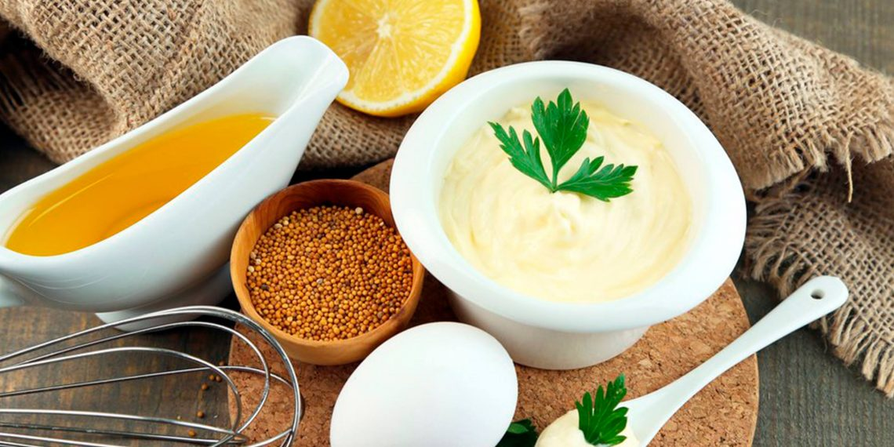

Салатик
Салат с курицей и мандаринами
Описание
Салат с мандаринами и курицей выделяется в мире кулинарии необычным насыщенным вкусом с толикой сладкого цитрусового смака. Эта неординарная смесь является очень сытным угощением к столу, а иногда может заменить и гарнир
Отварное или слегка поджаренное нежное куриное мясо неплохо сочетается с любыми цитрусовыми фруктами. Филе под соком из мандарина становится мягким и сочным, словно было приготовлено в духовке под фольгой.
Основные ингредиенты салатика – куриное филе, чаще отварное, и сладкие мандарины. Все это приправляют свежей зеленью, сыром, орехами или помидорками черри. Рецептура зависит от пристрастий кулинара и его фантазии.
Нам понадобится:
- 6 мандарин
- листья салата
- 400 г куриного филе
- 200 г сыра
- пару капель острого соуса Табаско
- 5 стеблей сельдерея
- 50 г миндаля
- 4 ст. л. домашнего майонеза
- 1 пучок кинзы
- соль, перец, специи по вкусу
Майонез домашний
Описание
Домашний майонез отличается от промышленного варианта своей натуральностью. Практически у каждой хозяйки есть свой индивидуальный рецепт, который является универсальным и его можно корректировать на свое смотрение. Не нужно думать, что приготовление домашнего майонеза – это очень сложная задача, все очень легко, главное — захотеть.
Нам понадобится:
- 2 куриных яйца
- 1 ч.л. сахара
- 1 ст.л. уксуса
- 1/2 ч.л. соли
- 1 ч.л. горчицы
- 300-350 мл. рафинированного растительного масла
Комментарии
Sirigo
Необычный, непривычный, но очень вкусный салат.
Cочетает в себе сладкий вкус мандарина и обжаренного куриного мяса. Мне кажется, что этот салат хорошо готовить зимой, когда все магазины и рынки пропахли мандаринами, а в воздухе витает атмосфера праздника. Мандарины, Новый год и вкусный ароматный салат, пахнущий праздником. Попробуйте приготовить это легкое блюдо и оно станет украшением вашего праздничного стола!